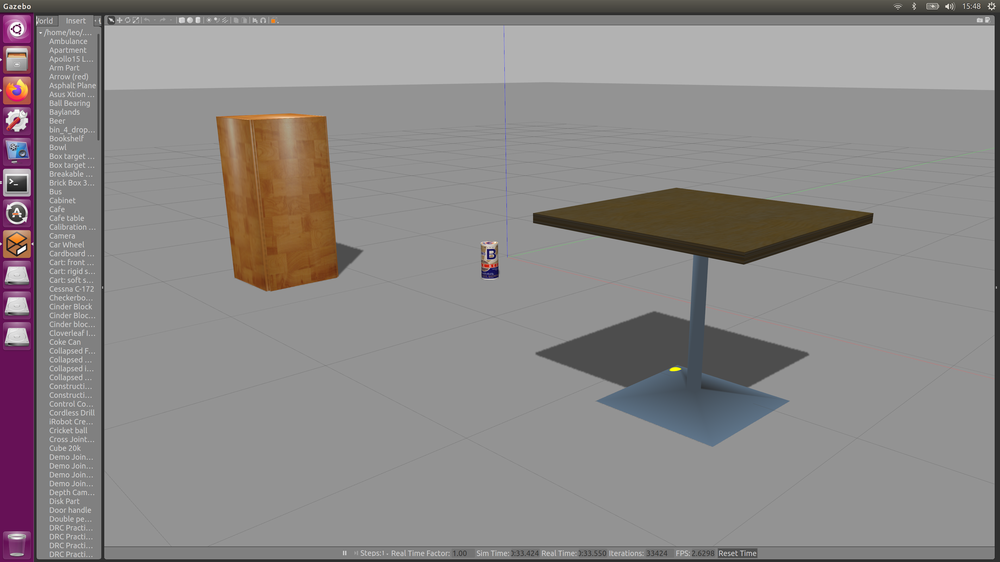

Import Gazebo Models
Download
- Clone the github repositry.
git clone https://github.com/osrf/gazebo_models
- Copy the models with the repo to the directory
~/.gazebo/models.
Insert
- Run gazebo
- Press Insert Tab, and press the model and drag to the background.

Modify launch and world files
- In worlds folder, have your world settings in
postbox.world.
<?xml version="1.0">
<sdf version="1.5">
<world name="default">
<include>
<uri>model://sun</uri>
</include>
<include>
<uri>model://ground_plane</uri>
</include>
<include>
<uri>model://postbox</uri>
<pose>1 0 0 0 0 0</pose>
</include>
</world>
</sdf>
- Can try running
gazebo postbox.world.
- In launch folder,
postbox_world.launch
<?xml version="1.0" encoding="UTF-8"?>
<launch>
<arg name="debug" default="false"/>
<arg name="gui" default="false"/>
<arg name="pause" default="true"/>
<arg name="world" default="$(find my_package)/worlds/postbox.world"/>
<include file="$(find gazebo_ros)/launch/empty_world.launch">
<arg name="world_name" value="$(arg world)"/>
<arg name="debug" value="$(arg debug)"/>
<arg name="gui" value="$(arg gui)"/>
<arg name="paused" value="$(arg pause)"/>
<arg name="use_sim_time" value="true"/>
</include>
</launch>
- Test with
roslaunch my_package postbox_world.launch.
- To initialize gazebo gui, set arg gui to True. To allow physics simulation and free-fall, set arg pause to False.
- Don't forget
catkin_make and source devel/setup.bash.
References
- github osrf/gazebo_models
- [Gazebo in 5 minutes] 002 - How to add gazebo models to a simulation
- Gazebo -- Model structure and requirements